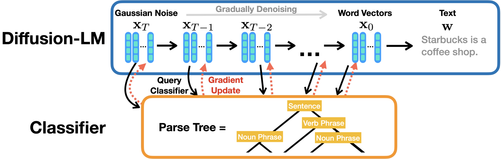
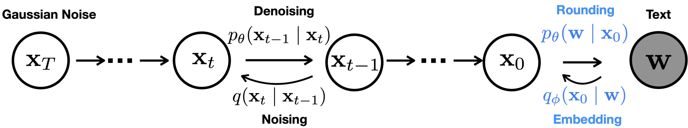
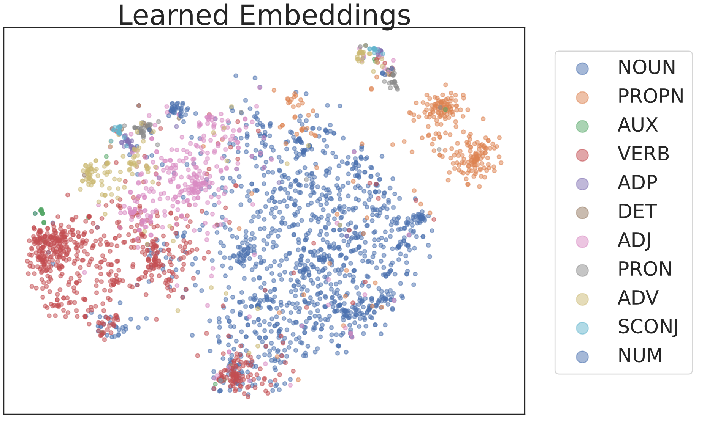
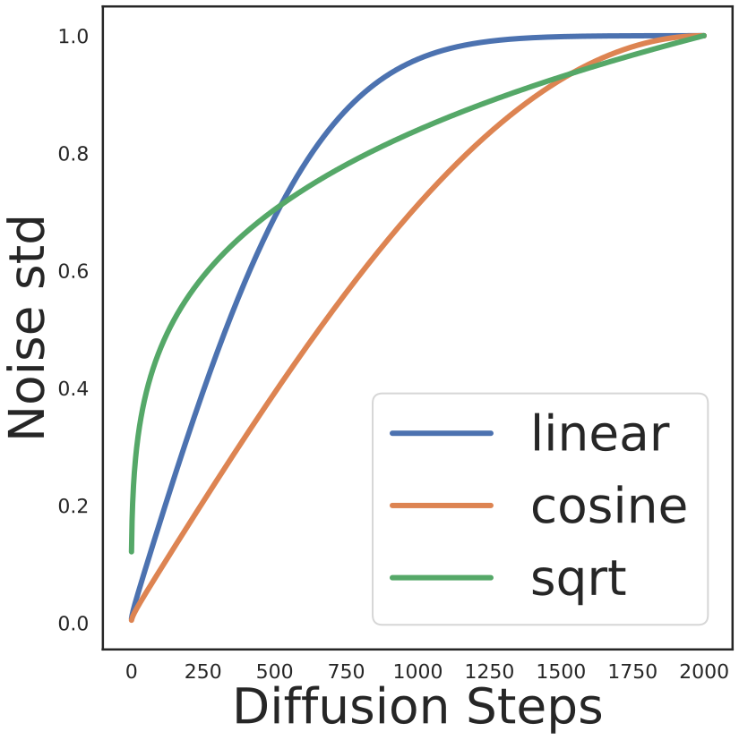
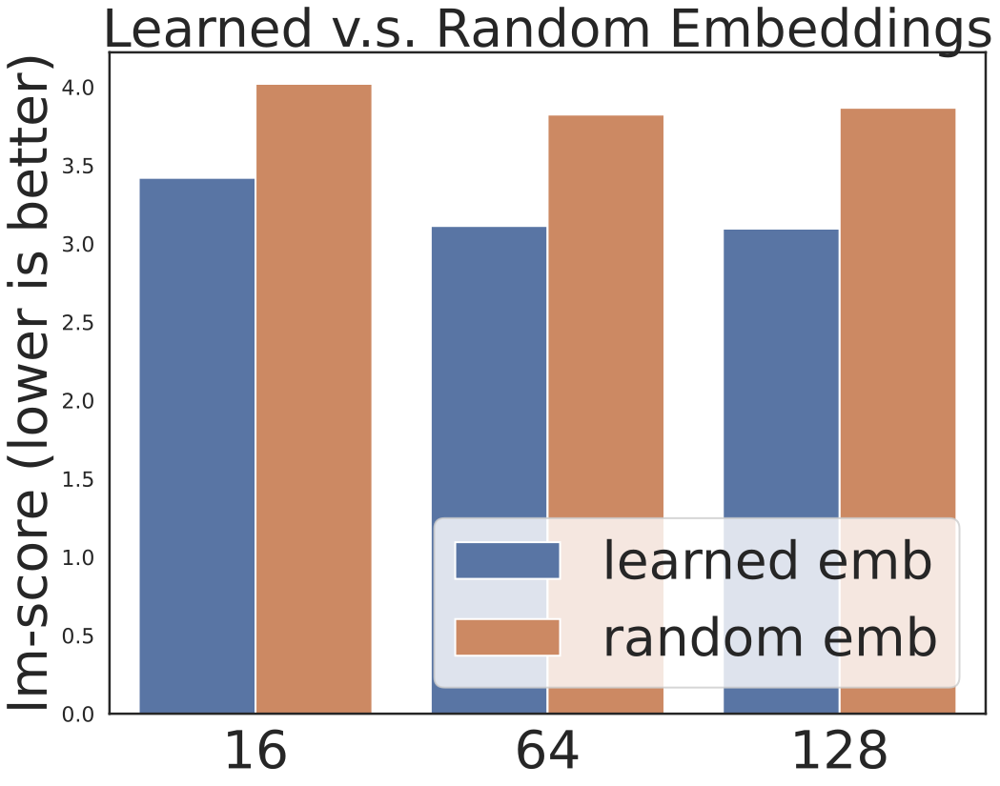
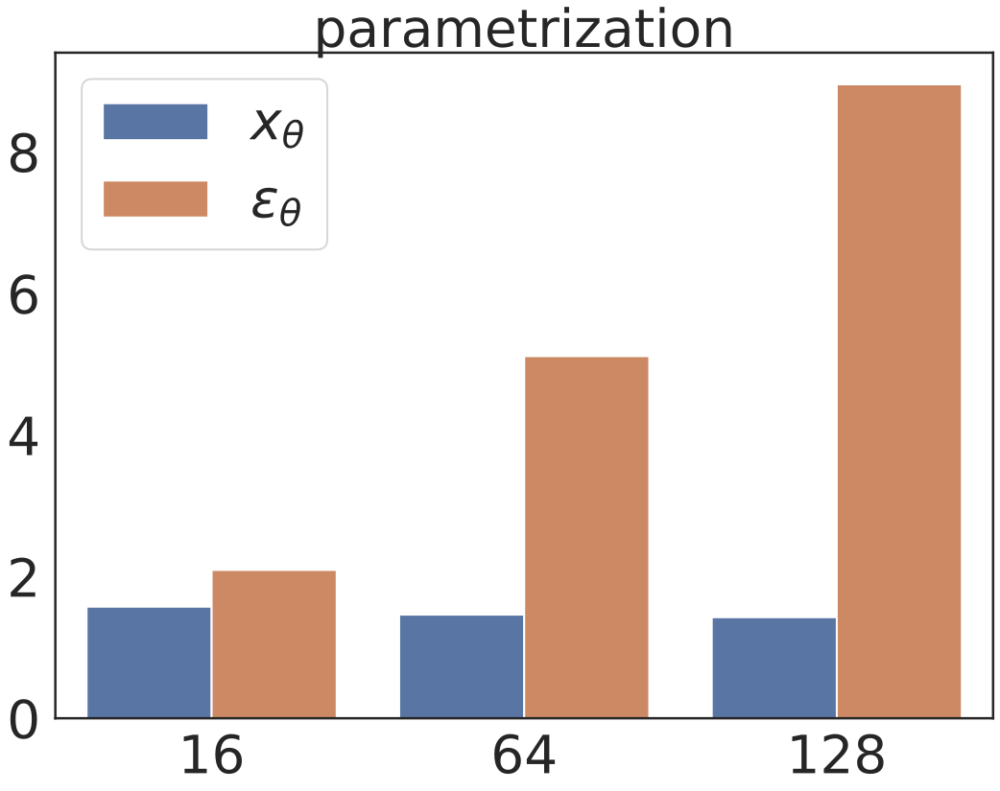
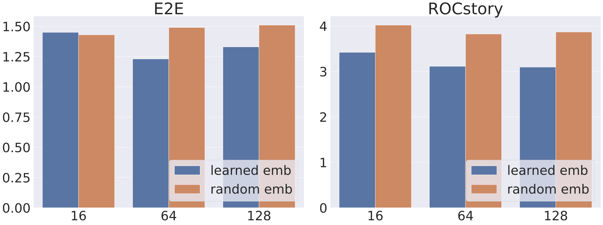
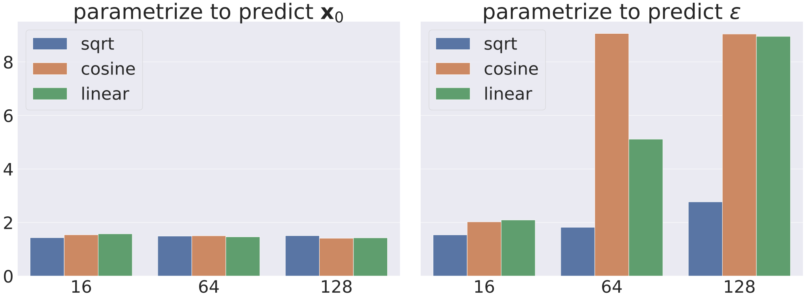
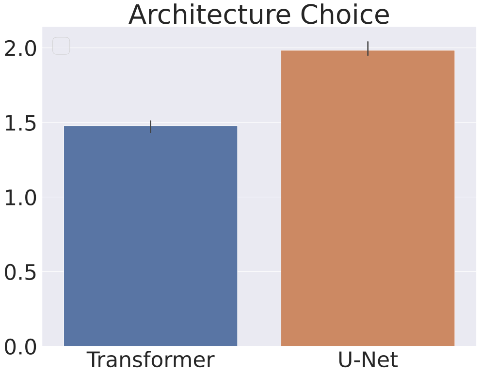

Diffusion-LM：用连续扩散模型改进可控文本生成
Diffusion-LM Improves Controllable Text Generation
GitHub star 为 2026-10-19 的快照。阅读状态、进度与收藏只保存在你的浏览器里。
逐节精读
这部分按论文的章节顺序，用本站自己的话把整篇论文从头讲一遍。读懂某个概念需要的背景知识，会在第一次用到它之前单独讲清楚（青色框）。每个结论都尽量说出“因为什么、所以什么”。这篇论文以 CC BY 4.0 许可发布，所以原文的图直接放在讲到它的地方，并说明怎么看；原图没画到的概念，用本站的示意图补上。标“推算”的数字是本站根据论文数据算出来的，不是论文原话。每节末尾有英文原文的链接。
0 导读：这篇论文解决什么问题
2022 年前后的语言模型几乎都是自回归的：从左到右，一次写一个词，每个词只看它前面已经写好的内容。这样写出来的文字很流畅，但很难“按要求写”。比如要求“这句话的句法分析树必须是指定的那一棵”，或者“第 7 到第 10 个词必须构成一个动词短语”，或者“一共写 14 个词”。这类要求牵涉整句话，而自回归模型写到一半时并不知道后半句会怎样，写错了也不能回头改。
让模型按要求写，叫可控生成。一种做法是为每种要求单独微调模型，但这既贵，又难以把几种要求组合起来。另一种做法叫“即插即用”：语言模型保持不动，另外训练一个小分类器来判断“文字满足要求的程度”，生成时用分类器引导语言模型。这种做法在情感、主题这类粗粒度要求上有效，但在句法结构这类精细要求上基本失败。
这篇论文的思路是换一种语言模型。图像领域的扩散模型从一团随机噪声出发，一步步去噪，最后得到一张图；中间每一步的状态都是连续的数值，所以可以直接对它求梯度，用分类器把它往“满足要求”的方向推一点，这叫分类器引导。作者把这套机制搬到文本上：先把每个词变成一个向量，一句话就成了一串向量；在这串向量上做高斯扩散；生成时从纯噪声开始去噪，最后把每个向量“取整”成离它最近的词。他们把这个模型叫 Diffusion-LM。
搬过来并不顺利，因为文本有两个图像没有的问题：词向量从哪里来，以及去噪得到的向量怎样才能干净地变回词。论文的主要技术贡献就是这两件事的解法：把词嵌入和扩散模型一起端到端训练；把网络改成直接预测“干净的词向量” \(\mathbf{x}_{0}\)，并在解码时每一步都把预测“夹”到最近的词向量上（clamping）。
结果方面，作者在两个小数据集（餐馆介绍 E2E 和五句话小故事 ROCStories）上从头训练了约 8000 万参数的模型。在语义内容、词性、句法树、句法片段、长度这五个控制任务上，它的成功率远高于两个基于自回归模型的即插即用方法 PPLM 和 FUDGE；在句法树和句法片段两项上，甚至超过了专门为该任务微调的模型。在填空任务上，它与专门训练来填空的自回归模型打平。代价也写得很清楚：似然比同等规模的自回归模型差，解码慢得多，训练收敛也更慢。
在扩散语言模型的发展史上，这篇论文是作者所知的第一个在文本上使用连续扩散的工作。后来的主流却走向了离散扩散，尤其是掩码扩散（SEDD、MDLM、LLaDA 等）。本页最后一节会用核实过的事实讲这条路线后来的走向。
读完这部分，你应该能回答这几个问题：
- 为什么即插即用的控制方法在自回归模型上很难做复杂的结构控制？
- 连续高斯扩散的前向过程、反向过程和简化损失是什么？预测均值、预测 \(\mathbf{x}_{0}\)、预测噪声有什么区别？
- 把扩散用到文本上，为什么需要“嵌入”和“取整”两步？为什么词嵌入要和模型一起学？
- 为什么模型预测出来的向量常常落在两个词之间？x0 预测和 clamping 是怎么解决的？
- 分类器引导在 Diffusion-LM 里具体怎么做？“流畅度正则项”起什么作用？
- 六个控制任务的结果说明了什么，又有哪些地方需要打折扣？
- 为什么后来的扩散语言模型大多转向了离散扩散？
1 引言：为什么要为“可控”换一种语言模型
自回归语言模型把一句话的概率拆成一串条件概率的乘积：先预测第一个词，再根据第一个词预测第二个词，依此类推。生成时也是一个词一个词往后写，GPT 系列都这样工作。
“可控”是说给定一个控制目标 \(\mathbf{c}\)，生成满足它的文字。控制目标可以很粗，比如“情感是正面的”；也可以很细，比如“句子的句法分析树必须长成这样”。粗粒度目标只要整体语气对就行，生成过程中随时调整都来得及。细粒度目标要求每个位置都对得上，而且常常要提前规划：要让第 7 到第 10 个词构成动词短语，写第 3 个词时就得为后面留好位置。
实现可控生成有两条路。第一条是微调：收集大量“(控制目标, 文字)”配对，训练一个条件语言模型。每种控制都要重新训练一次；两种控制要同时满足时（例如“既要正面、又要无毒”），还得为这个组合另外准备数据。第二条是即插即用（plug-and-play）：语言模型冻结不动，只为每种控制训练一个小分类器，生成时让分类器参与决策。后者模块化、便宜，可以随意组合，但前提是“引导”的办法真的有效。
作者认为，即插即用的方法在自回归模型上之所以只能做简单属性，是因为生成方式本身有两个限制。第一，生成顺序是固定的，模型只能往右写，前面写错了没法回头修。第二，分类器只能在“写了一半的句子”上做判断，而像“整句的句法树”“总长度”这类要求，要等整句写完才能判定；要在半句话上预判“最后能不能满足”，相当于要求分类器自己会做前瞻规划。
Diffusion-LM 的生成方式完全不同。它先为句子的每个位置放一个随机的高斯向量，然后反复去噪：每一步都同时更新所有位置，句子从“一团噪声”逐渐变成“一串词向量”，最后再取整成词。去噪过程的中间状态构成了一个由粗到细的层次：早期的状态只决定了大致结构，后期的状态才决定具体用词。这些中间状态都是连续向量，可以对它们求梯度，于是“用分类器把句子往满足要求的方向推”就变成了一个普通的优化问题，而且每一步推的都是整句。

为了让连续扩散适用于文本，作者对标准扩散做了几处改动：在扩散过程前面加一个“嵌入”步骤，把词变成向量；在后面加一个“取整”步骤，把向量变回词；设计一个能同时学习词嵌入的训练目标；再用两种技巧减小取整误差（§4）。控制方法则是在每个去噪步骤上，对连续隐变量做几次梯度更新，在流畅度和满足控制之间取得平衡（§5.1）。
论文列出的实验发现是：在六个控制目标上，它的成功率几乎是以前即插即用方法的两倍，并且在全部需要分类器的任务上“与微调模型持平或更好”（§7.1）；几种控制可以直接组合（§7.2）；对于长度控制和填空这类“锚定在某些位置”的控制，它不需要分类器，填空效果与专门从头训练的自回归模型相当（§7.3）。
2 相关工作：文本扩散、非自回归模型和即插即用控制
文本上的扩散模型。扩散模型在图像和音频这类连续数据上已经做到了最好的生成质量。对于文本这种离散数据，此前的工作是在离散状态空间上定义扩散：前向过程直接破坏词本身，比如每个词以一定概率被换成一个特殊的“吸收”符号（类似 [MASK]），或者被换成一个随机的词。D3PM 就是这一类的代表（本站有D3PM 精读页）。这篇论文走的是另一条路：不破坏词本身，而是先把词变成向量，再在向量上加连续的高斯噪声。作者说，据他们所知这是第一个在文本上做连续扩散的工作。连续路线最大的好处，是去噪过程中的每个中间状态都是连续向量，可以直接用梯度做控制；离散扩散的中间状态是一串词或掩码，没法直接求梯度。
自回归与非自回归语言模型。GPT-3、PaLM 这些大模型都是从左到右的自回归模型。固定的生成顺序在两类控制上特别吃亏。一类是填空：右边的文字已经给定，模型必须写出能接上右边的内容，可是自回归模型生成时根本看不到右边。另一类是句法结构控制：它约束的是整句话的全局性质，同时涉及左右两边。为此，以前的工作发明了专门的训练和解码方法，比如把要填的部分挪到句末再训练的填空模型，或者 DELOREAN、COLD 这样把输出放松成连续变量、再从右边的上下文反传梯度的解码方法。Diffusion-LM 则可以接受任何“看整句”的分类器作为条件。
非自回归（non-autoregressive）模型一次性、并行地生成所有位置，而不是一个接一个地生成。它最早在机器翻译和语音识别里取得成功。这两个任务有一个共同点：输入几乎决定了输出，合理的输出只有很少几种，也就是说输出的“熵”很低。
语言建模恰恰相反：给定“很久很久以前”，后面可以接成千上万种合理的故事。如果每个位置独立地、同时做决定，第 2 个位置可能选了故事 A 的词，第 3 个位置选了故事 B 的词，拼起来就不通顺。（这是本站对原因的通俗解释；论文本身只引用了一篇研究，结论是这类方法在语言建模上失败。）扩散模型也不是从左到右的，但它并不是“一步生成”，而是通过很多步迭代让各位置逐渐协调起来，所以能绕开这个问题。
即插即用的可控生成。它的目标是语言模型冻结不动，用一个“势函数”（通常是分类器）衡量文字满足控制的程度，生成时同时照顾控制和流畅度。基于自回归模型的方法主要有两类：
- FUDGE：在生成每个词时，语言模型先给出下一个词的概率分布；另外训练一个“未来判别器”，它看着“已写好的前缀 + 候选的下一个词”，预测“整句写完后能不能满足要求”。然后用判别器的分数给语言模型的概率重新加权，再从中采样。它的难点在于：判别器必须仅凭前缀就预判整句的命运。
- GeDi、DExperts：思路和 FUDGE 类似，也是给下一个词的概率重新加权，只是加权用的是一个为该控制微调过的小语言模型。
- PPLM：和本文最接近。它在生成每个词之前，对自回归模型内部的隐藏激活做若干步梯度上升，让分类器认为“满足要求”的概率变高、同时不偏离语言模型太远，然后用改过的激活算出下一个词的分布。因为 PPLM 仍然从左到右生成，前面写错的词改不回来。
这些方法在“主题”这类属性控制上有效，但作者会在 §7.1 中说明，它们在句法结构和语义内容这类更复杂的控制上表现很差。Diffusion-LM 的做法是把“分类器引导的梯度更新”施加在扩散模型那一串连续隐变量上。
3 问题设定与背景：可控生成的贝叶斯写法，和连续扩散模型
3.1 可控生成：从后验分布里采样
记一句话为 \(\mathbf{w}=[w_{1},\dots,w_{n}]\)，语言模型给出它的概率 \(p_{\text{lm}}(\mathbf{w})\)。可控生成要做的，是从条件分布 \(p(\mathbf{w}\mid\mathbf{c})\) 中采样，其中 \(\mathbf{c}\) 是控制目标：句法控制时它是一棵目标句法树，情感控制时它是一个情感标签。
在即插即用的设定里，我们手上有两样东西：一个在大量无标注文本上训练好的语言模型 \(p_{\text{lm}}(\mathbf{w})\)，以及为每种控制在少量标注数据上训练的分类器 \(p(\mathbf{c}\mid\mathbf{w})\)。比如句法控制用的“分类器”是一个概率句法分析器，它给出“句子 \(\mathbf{w}\) 的句法树是 \(\mathbf{c}\)”的概率。按贝叶斯公式，两者相乘就是我们想要的后验（差一个与 \(\mathbf{w}\) 无关的常数）：
第一项鼓励句子通顺，第二项鼓励句子满足控制。一句话只有两项都高，后验概率才高。
难点在于，\(\mathbf{w}\) 是离散的。以 ROCStories 为例，词表约 1.1 万个词，句长 64，所有可能的句子数大约是 \(11043^{64}\approx10^{259}\)（推算），不可能枚举。而且我们没法对一个离散的词求梯度：把 “cat” 往 “dog” 的方向挪 0.1 是没有意义的。所以，在离散文字上直接从这个后验采样非常困难。Diffusion-LM 的出路是把采样搬到一串连续的隐变量上去做。
3.2 自回归语言模型
标准做法把 \(p_{\text{lm}}\) 按从左到右的顺序分解：
生成就变成了“根据已经写好的部分，反复预测下一个词”，这个预测通常由 Transformer 完成。（论文这一处的公式把 \(w_{i}\) 写成了 \(x_{i}\)，是笔误。）
3.3 连续扩散模型，从零讲起
扩散模型由两个方向相反的过程组成。前向过程是固定的、不需要学习的：拿一个干净的数据 \(\mathbf{x}_{0}\)（比如一张图，或者本文里的一串词向量），每一步往里加一点点高斯噪声，加 \(T\) 步之后，它就变成了几乎纯粹的标准高斯噪声 \(\mathbf{x}_{T}\)。反向过程由神经网络学习：从纯噪声 \(\mathbf{x}_{T}\) 出发，每一步去掉一点噪声，\(T\) 步之后得到一个像真实数据的样本。
前向过程的每一步写成：
其中 \(\beta_{t}\) 是第 \(t\) 步加入的噪声量，是事先定好的超参数。之所以把上一步乘上 \(\sqrt{1-\beta_{t}}\) 而不是原样保留，是为了让总的方差不会随着加噪越积越大：信号缩小一点、噪声补上一点，最后正好收敛到方差为 1 的标准高斯。
高斯加高斯还是高斯，所以连续加 \(t\) 步噪声的结果可以一步写出来。记 \(\bar{\alpha}_{t}=\prod_{s}(1-\beta_{s})\)（从第一步一直乘到第 \(t\) 步），则
这一点对训练非常重要：训练时不用真的一步步加噪，想要第几步的带噪样本，直接用上式算出来就行。\(\sqrt{\bar{\alpha}_{t}}\) 叫信号系数，\(\sqrt{1-\bar{\alpha}_{t}}\) 是噪声的标准差；\(t\) 越大，前者越小、后者越大。
用一个一维的小例子感受一下。假设某个词的向量只有一维，取值 \(\mathbf{x}_{0}=1.0\)；固定抽到的噪声 \(\boldsymbol{\epsilon}=-0.8\)。用论文实际采用的 sqrt 噪声调度（\(T=2000\)，§6.1 会详细讲），不同步数的带噪值如下：
| 步数 \(t\) | 信号系数 \(\sqrt{\bar{\alpha}_{t}}\) | 噪声标准差 \(\sqrt{1-\bar{\alpha}_{t}}\) | \(\mathbf{x}_{t}\) | 此时还剩什么 |
|---|---|---|---|---|
| 1 | 0.988 | 0.157 | 0.862 | 几乎就是原来的词向量 |
| 50 | 0.917 | 0.398 | 0.599 | 前 50 步噪声涨得很快 |
| 200 | 0.827 | 0.562 | 0.377 | 信号仍占多数 |
| 500 | 0.707 | 0.707 | 0.141 | 信号与噪声一样大 |
| 1000 | 0.541 | 0.841 | −0.132 | 噪声占多数，已经看不出原值 |
| 1999 | 0.014 | 1.000 | −0.786 | 几乎就是那份噪声 \(-0.8\) |
推算：\(\bar{\alpha}_{t}=1-\sqrt{t/T+s}\)，\(s=10^{-4}\)，\(T=2000\)（论文附录 A）；\(\mathbf{x}_{t}=\sqrt{\bar{\alpha}_{t}}\cdot1.0+\sqrt{1-\bar{\alpha}_{t}}\cdot(-0.8)\)。
反向过程由一个神经网络参数化：
也就是说，网络看着当前的带噪状态 \(\mathbf{x}_{t}\) 和步数 \(t\)，给出“上一步的状态大概在哪里”（均值 \(\mu_{\theta}\)）以及“有多不确定”（方差 \(\Sigma_{\theta}\)）。同一个网络被所有步数共用，步数 \(t\) 作为输入告诉它“现在噪声有多大”。网络可以是图像里常用的 U-Net，也可以是 Transformer。生成时，先从标准高斯中抽一个 \(\mathbf{x}_{T}\)，然后反复调用这个网络，一路采样到 \(\mathbf{x}_{0}\)。

训练目标。扩散模型训练的目标是最大化数据的对数似然 \(\log p_{\theta}(\mathbf{x}_{0})\)。这个量算不出来，标准做法是优化它的一个下界（变分下界，VLB）。对应的损失写作：
三类项的意思分别是：\(L_{T}\) 检查“加满噪声后的分布是不是标准高斯”，它不含可学参数；每个 \(L_{t-1}\) 比较“模型的一步去噪” \(p_{\theta}(\mathbf{x}_{t-1}\mid\mathbf{x}_{t})\) 和“真正的一步去噪” \(q(\mathbf{x}_{t-1}\mid\mathbf{x}_{0},\mathbf{x}_{t})\) 差多少；\(L_{0}\) 检查最后一步能不能还原出数据。
这里“真正的一步去噪”之所以算得出来，是因为训练时我们知道干净的 \(\mathbf{x}_{0}\)。在同时知道 \(\mathbf{x}_{0}\) 和 \(\mathbf{x}_{t}\) 的条件下，\(\mathbf{x}_{t-1}\) 服从一个高斯分布，均值有闭式解（论文附录 E）：
直观地说，上一步的位置是“干净数据”和“当前带噪状态”的加权平均。
这个下界训练起来不稳定，需要很多技巧。Ho 等人（DDPM）提出了一个简化版本：两个方差相同的高斯之间的 KL 散度，等于均值之差的平方除以 \(2\sigma_{t}^{2}\) 再加一个常数；把这个系数和常数都扔掉，每一项就只剩一个均方误差：
扔掉系数之后，它不再是对数似然的严格下界；但实践中它训练更稳定、生成质量更好。Diffusion-LM 会沿用同样的简化。
上面的写法让网络直接输出均值 \(\mu_{\theta}\)（论文称 \(\mu_{\theta}\) 参数化，脚注 2 说明这与 DDPM 原文不同）。但网络也可以输出别的东西，再换算成均值：
- 预测 \(\mathbf{x}_{0}\)：网络 \(f_{\theta}(\mathbf{x}_{t},t)\) 直接猜干净数据，再代入上面的公式得到均值：\(\mu_{\theta}=c_{1}(t)\,f_{\theta}(\mathbf{x}_{t},t)+c_{2}(t)\,\mathbf{x}_{t}\)。
- 预测噪声 \(\boldsymbol{\epsilon}\)：网络猜 \(\mathbf{x}_{t}\) 里混进去的那份噪声，由 \(\mathbf{x}_{t}=\sqrt{\bar{\alpha}_{t}}\mathbf{x}_{0}+\sqrt{1-\bar{\alpha}_{t}}\boldsymbol{\epsilon}\) 反解出 \(\mathbf{x}_{0}\)，再算均值。图像扩散模型最常用这种。
因为 \(\mathbf{x}_{t}\) 已知，三者之间都是线性换算，携带的信息完全相同。区别在于：用哪种量来算均方误差，会改变损失在不同步数上的相对权重，从而训练出不同的模型。这一点在 §4.2 是关键。
4 Diffusion-LM：把连续扩散改造成语言模型
4.1 端到端训练：词嵌入和扩散模型一起学
首先定义一个嵌入函数 \(\mathrm{Emb}(w_{i})\)，把每个词映射成一个 \(d\) 维向量。一句 \(n\) 个词的话就变成 \(n\) 个向量排在一起，论文把它写成一个 \(nd\) 维的向量 \(\mathrm{Emb}(\mathbf{w})=[\mathrm{Emb}(w_{1}),\dots,\mathrm{Emb}(w_{n})]\)。实验里 \(n=64\)，\(d\) 在 E2E 上取 16、在 ROCStories 上取 128（§6.1）。注意这里的 \(d\) 很小，比 GPT-2 的 768 维嵌入小得多。
词向量从哪里来？作者在预实验里试过三种选择：随机的高斯向量（固定不变），现成的预训练词向量（如 GloVe 或 GPT-2 的嵌入，也固定不变），以及和扩散模型一起端到端学习的嵌入。结论是固定的嵌入都不如端到端学习的好。
为了能端到端地学，作者在图 2 的链条上加了两步。前向一侧，从文字到 \(\mathbf{x}_{0}\) 加一个带一点噪声的嵌入步骤：
反向一侧，从 \(\mathbf{x}_{0}\) 回到文字加一个可训练的取整步骤，每个位置独立地做一次 softmax 分类：
于是训练目标变成（论文式 (2)）：
第二行（实际使用的简化版）的三项各管一件事：
- \(\mathcal{L}_{\text{simple}}(\mathbf{x}_{0})\)：普通的去噪损失，让模型学会在每一步把噪声去掉。
- \(\|\mathrm{Emb}(\mathbf{w})-\mu_{\theta}(\mathbf{x}_{1},1)\|^{2}\)：最后一步去噪必须落到正确的词向量上。它来自变分下界里的 \(L_{0}\) 项。
- \(-\log p_{\theta}(\mathbf{w}\mid\mathbf{x}_{0})\)：取整的交叉熵，要求 \(\mathbf{x}_{0}\) 能被准确地认回原来的词。
因为嵌入现在带着可训练的参数，而 \(\mathbf{x}_{0}\) 是从 \(q_{\phi}\) 里采样出来的，作者用重参数化技巧让梯度穿过采样：把 \(\mathbf{x}_{0}\) 写成 \(\mathrm{Emb}(\mathbf{w})\) 加上一份与参数无关的噪声，这样损失对 \(\mathbf{x}_{0}\) 的梯度就能直接传到嵌入表上。
为什么嵌入不会“学坏”？端到端学习嵌入有一个隐患：如果嵌入可以随意变化，模型可能找到让损失很低、却没有用处的解。论文附录 E 讨论了其中一种：如果噪声调度没有让 \(\bar{\alpha}_{T}\) 精确等于 0，那么把词向量的模长变得非常大，就能让所有去噪步骤都变得很容易预测，但这时 \(\mathbf{x}_{T}\) 根本不是标准高斯，生成时无法从标准高斯正确起步。\(L_{T}\) 项惩罚的正是这种情况。另一种退化是所有词的向量挤到同一点上，那样去噪也会变得很容易；它会被取整的交叉熵项阻止，因为向量挤在一起就分不清是哪个词了（这一条是本站的补充解释，论文没有专门讨论）。
学到的嵌入长什么样？作者观察到，学到的词向量会有意义地聚类：词性相同（句法角色相同）的词往往聚在一起。

improved_diffusion/transformer_model2.py 的 TransformerNetModel2）是这样搭的：用 BERT-base 配置的编码器作为主体，在它前面加一个两层的“上投影”把 \(d\) 维（如 16 维）的输入向量升到 BERT 的隐藏维度，在后面加一个两层的“下投影”降回 \(d\) 维；步数 \(t\) 经过一个小网络后加到输入上。取整用的 softmax 层与嵌入表共享权重（lm_head.weight = word_embedding.weight），所以一个向量与哪个词的嵌入内积大，就更可能被认成哪个词。4.2 取整误差：为什么去噪结果常常“卡在两个词之间”
学到的嵌入定义了“文字 → 连续 \(\mathbf{x}_{0}\)”的映射。反过来，“预测出的 \(\mathbf{x}_{0}\) → 文字”靠取整：每个位置取概率最大的词，即 \(\arg\max p_{\theta}(\mathbf{w}\mid\mathbf{x}_{0})\)。理想情况下，去噪的最后结果应该恰好落在某个词的嵌入上，取整就是一个无损的“对号入座”。但作者发现实际并非如此：模型生成的 \(\mathbf{x}_{0}\) 常常不能“下定决心”落到某一个词上，而是停在几个词之间。
作者的解释是：在 \(\mu_{\theta}\) 参数化的 \(\mathcal{L}_{\text{simple}}\) 里，“\(\mathbf{x}_{0}\) 必须对准某个词向量”这一约束，只在 \(t\) 接近 0 的那几项里起作用。为什么会这样，可以用 §3.3 的公式看清楚。网络在第 \(t\) 步要预测的目标是 \(\hat{\mu}=c_{1}(t)\mathbf{x}_{0}+c_{2}(t)\mathbf{x}_{t}\)。其中 \(\mathbf{x}_{t}\) 是网络的输入，它那部分网络照抄就行；真正需要“猜”的只有 \(c_{1}(t)\mathbf{x}_{0}\) 这一部分。所以如果网络心里对 \(\mathbf{x}_{0}\) 的估计差了 \(\delta\)，均值的误差只有 \(c_{1}(t)\delta\)，损失只增加 \(c_{1}(t)^{2}\delta^{2}\)。在论文的噪声调度下，这个系数随 \(t\) 急剧变小：
| 步数 \(t\) | \(c_{1}(t)\) | \(c_{1}(t)^{2}\)：对 \(\mathbf{x}_{0}\) 估计误差的惩罚权重 |
|---|---|---|
| 1 | 0.595 | 0.35 |
| 2 | 0.265 | 0.070 |
| 10 | 0.052 | 0.0027 |
| 50 | 0.011 | 0.00012 |
| 200 | 0.0030 | 0.0000091 |
推算：sqrt 调度，\(T=2000\)，\(c_{1}(t)=\sqrt{\bar{\alpha}_{t-1}}\beta_{t}/(1-\bar{\alpha}_{t})\)。
也就是说，在 \(\mu_{\theta}\) 参数化下，第 200 步时网络对 \(\mathbf{x}_{0}\) 猜错一个单位，损失只多出约十万分之一。网络几乎没有动力在中间步骤里把 \(\mathbf{x}_{0}\) 猜到某个具体的词上；只有在最后几步才被逼着“定下来”，而那时剩下的步数已经不多了。论文说，用这种参数化必须仔细调参，才能让目标足够重视那几项（附录 H）。
作者的办法是换成 \(\mathbf{x}_{0}\) 参数化：让网络 \(f_{\theta}(\mathbf{x}_{t},t)\) 在每一步都直接输出对干净 \(\mathbf{x}_{0}\) 的猜测，并在每一项里直接比较它与真正的 \(\mathbf{x}_{0}\)：
附录 E 证明，\(\|\hat{\mu}-\mu_{\theta}\|^{2}\) 正好等于 \(c_{1}(t)^{2}\|\mathbf{x}_{0}-f_{\theta}\|^{2}\)，两种写法只差一个随步数变化的系数。去掉这个系数后，\(\mathbf{x}_{0}\) 估计误差在每一步都按同样的权重受罚。于是网络在每一步都被要求给出一个“干净的、像样的词向量序列”。作者发现，用这个目标训练的模型很快就学会了 \(\mathbf{x}_{0}\) 应该精确地落在某个词向量的中心。把嵌入、取整和 \(L_{T}\) 项都写进来，最终的训练目标是（附录 E）：
解码端的同一个想法：clamping。用 \(\mathbf{x}_{0}\) 参数化的模型生成时，每一步先用网络算出对 \(\mathbf{x}_{0}\) 的估计 \(f_{\theta}(\mathbf{x}_{t},t)\)，再以它为条件采样出 \(\mathbf{x}_{t-1}\)。clamping 技巧在这中间多做一件事：先把预测出的每个位置的向量，替换成离它最近的那个词向量，再用替换后的结果去采样。论文用简化的记号写成：
这样做强迫模型在中间步骤就“对某个词下注”，使每一步的预测更明确，最终的取整误差更小。
rounding.py）。论文脚注 6 补充了一点：在 \(t\) 接近 \(T\) 的早期步骤里，模型还没想好用什么词，这时强行 clamping 可能不是最优的；不过实验中对所有步骤都做 clamping 并没有明显损害效果。如果想遵循这个直觉，也可以把“从第几步开始 clamping”当作一个超参数。
5 解码与可控生成：在连续隐变量上做梯度更新
5.1 分类器引导：每一步都把 \(\mathbf{x}_{t-1}\) 往“满足要求”的方向推
图像扩散模型要生成“一只猫”时，可以这样做：另外训练一个分类器，它看着带噪的中间图像判断“这是不是猫”。每做一步去噪，就沿着分类器给出的梯度 \(\nabla\log p(\mathbf{c}\mid\mathbf{x})\) 把中间图像挪一点，让它更像猫。依据是贝叶斯公式取对数再求梯度：\(\nabla\log p(\mathbf{x}\mid\mathbf{c})=\nabla\log p(\mathbf{x})+\nabla\log p(\mathbf{c}\mid\mathbf{x})\)，常数项求导后消失了。第一项由扩散模型提供，第二项由分类器提供。之前的图像工作每个去噪步骤只沿分类器梯度走一步。
Diffusion-LM 的控制同样基于 §3.1 的贝叶斯写法，只是不在离散的文字上做，而是在去噪链的连续隐变量 \(\mathbf{x}_{0:T}\) 上做，最后再取整成文字。控制整条链等价于从后验 \(p(\mathbf{x}_{0:T}\mid\mathbf{c})=\prod_{t}p(\mathbf{x}_{t-1}\mid\mathbf{x}_{t},\mathbf{c})\) 中采样。作者把这个联合问题拆成每一步一个小问题：
最后一步用了一个条件独立假设（沿用之前控制扩散模型的工作）：已知 \(\mathbf{x}_{t-1}\) 之后，\(\mathbf{x}_{t}\) 对判断控制目标没有额外帮助。于是在第 \(t\) 步，对 \(\mathbf{x}_{t-1}\) 做梯度更新：
两项都能求导：第一项来自 Diffusion-LM 本身，第二项来自一个神经网络分类器。和图像工作一样，这个分类器是在扩散的隐变量（带噪的向量）上训练的，而不是在干净的文字上。
作者在图像做法的基础上加了两处改动，一是为了文字通顺，二是为了控制得更准。
改动一：流畅度正则。实际优化的目标是
其中 \(\lambda\) 是超参数，权衡流畅度（第一项）和控制（第二项）。第一项的含义很直接：\(p(\mathbf{x}_{t-1}\mid\mathbf{x}_{t})\) 是以模型预测的均值 \(\mu\) 为中心的高斯，它的对数对 \(\mathbf{x}_{t-1}\) 求梯度，得到 \(-(\mathbf{x}_{t-1}-\mu)/\sigma^{2}\)，作用是把 \(\mathbf{x}_{t-1}\) 往“语言模型自己想去的地方”拉回来。作者说，现有的扩散控制方法都没有这一项，而他们发现这一项对生成通顺的文字至关重要。没有它，分类器的梯度会把向量推到分类器很满意、但离任何正常句子都很远的地方，取整之后就是一串不通的词。
作者把这个过程类比为文字生成中的核采样或低温采样：它介于“从分布中随机采样”和“取分布的最大值”之间，既有随机性，又偏向高概率的区域。
改动二：每步多走几步梯度。为了控制得更准，每个去噪步骤上做 3 次 Adagrad 更新，而不是 1 次梯度步。论文脚注 7 说，他们试过用普通的 SGD 替代 Adagrad，但 Adagrad 对超参数的敏感程度要低得多。为了抵消多出来的计算，解码时把扩散步数从 2000 降到 200（§6.1 与附录 C），论文称这不会明显损害样本质量。
用一个一维的小例子走一遍。假设隐变量只有一维。语言模型这一步的提议是 \(p(\mathbf{x}_{t-1}\mid\mathbf{x}_{t})=\mathcal{N}(-0.4,\ 0.5^{2})\)，即它想把 \(x\) 放在 \(-0.4\) 附近。控制目标的分类器是 \(p(\mathbf{c}\mid x)=\sigma(4x)\)（\(\sigma\) 是 sigmoid），\(x\) 越大越满足要求，分界线在 \(x=0\)。我们从 \(x=-0.4\) 出发，按目标的梯度做梯度上升，步长 0.1：
| 流畅度权重 \(\lambda\) | 第 1 步后 | 第 3 步后 | 第 30 步后 | 30 步后的 \(p(\mathbf{c}\mid x)\) | 解读 |
|---|---|---|---|---|---|
| 0（不加流畅度项） | −0.067 | 0.298 | 0.956 | 0.98 | 控制满足了，但 \(x\) 一路跑远，离语言模型的提议越来越远，而且还在继续跑 |
| 0.5 | −0.067 | 0.158 | 0.207 | 0.70 | 停在分界线右侧不远处：既满足控制，又离提议不远 |
| 2 | −0.067 | −0.099 | −0.100 | 0.40 | 流畅度压倒控制，停在分界线左侧，控制没有满足 |
推算：普通梯度上升（不是 Adagrad），数字只用来说明趋势。
这个例子说明了三件事。第一，第一步对所有 \(\lambda\) 都一样，因为起点正好是语言模型的均值，流畅度项的梯度为零；流畅度项只在 \(x\) 被推离之后才开始往回拉。第二，\(\lambda=0\) 时目标没有上界，只要多走几步，\(x\) 就会越跑越远，这正是论文说必须加流畅度项的原因。第三，\(\lambda\) 太大会让控制失效，所以它必须按任务调。在真实模型里，这样的“推一推”在 200 个去噪步骤上各做一次，下一步的去噪又以推过的位置为起点，控制效果会一步步累积。
分类器长什么样。附录 D 列出了每个任务用的分类器，它们的输入都是 Diffusion-LM 的隐变量（词向量序列），而不是文字：
- 语义内容：一个 GPT-2 small 架构的自回归模型，看着文字预测 “(字段, 取值)” 这一对；\(\log p(\mathbf{c}\mid\mathbf{x}_{t})\) 取为“取值”部分每个 token 的对数概率。
- 词性：一个 BERT-base 架构的词性标注器，输入是拼起来的词向量，对每个位置输出一个词性分布；\(\log p(\mathbf{c}\mid\mathbf{x}_{t})\) 是目标词性序列中每个词的对数概率之和。
- 句法树：一个基于 Transformer 的成分句法分析器，对每个片段独立地预测“不是成分”或成分标签（如名词短语）；\(\log p(\mathbf{c}\mid\mathbf{x}_{t})\) 是目标树中所有片段的对数概率之和。
- 句法片段：用同一个句法分析器，取“目标片段被标成目标标签”的对数概率。
附录 B 和表 6 给出了控制的超参数：\(\lambda\) 在 \(\{0.1,0.01,0.001,0.0005\}\) 中选，Adagrad 学习率在 \(\{0.05,0.1,0.15,0.2\}\) 中选。最后选定的是：语义内容 \(\lambda=0.01\)、学习率 0.1；词性 0.0005、0.05；句法树 0.0005、0.2；句法片段 0.1、0.15；长度 0.01、0.1。可以看到不同任务的 \(\lambda\) 相差 200 倍，这与上面玩具例子的结论一致：流畅度和控制的平衡点要按任务调。
组合多个控制。这种做法天然支持组合：有几个独立的控制目标，就把几个分类器的对数概率加起来，对和求梯度即可（§7.2 的实验）。
scripts/infill_util.py 的 langevin_fn3 等函数，配合 gaussian_diffusion.py 的 ddim_sample）里，一个去噪步骤的顺序是：先由网络预测 \(\hat{\mathbf{x}}_{0}\) 并采样出 \(\mathbf{x}_{t-1}\)，再对这个样本做 3 次 Adagrad 更新，损失是“分类器的交叉熵 + 系数 × \((\mu-\mathbf{x}_{t-1})^{2}/\sigma\)”。另外有两处论文没写的细节：最后 10 个去噪步骤（\(t<10\)）不做梯度更新；README 里的控制命令用的是 DDIM 采样器且 \(\eta=1\)，这种设置下的随机程度与普通的逐步去噪相当。5.2 最小贝叶斯风险（MBR）解码：从一堆样本里挑“最有代表性”的一个
很多条件生成任务只需要一个高质量的输出，比如机器翻译或句子填空。扩散模型是采样式的，每次生成都不一样。作者在这类任务上用最小贝叶斯风险解码：先从 Diffusion-LM 采一组样本 \(\mathcal{S}\)，再选出“与其他样本平均最相似”的那一个：
这里的损失 \(\mathcal{L}\) 可以取负的 BLEU 分数，BLEU 越高表示两句话的词语重合越多。它为什么有效？低质量的样本往往是“离群”的，与其余样本都不像，于是平均损失高，会被淘汰；而大多数样本都同意的内容，更可能是好的。举一个示意的例子（相似度是编的）：
| 样本 | 与 S1 相似度 | 与 S2 相似度 | 与 S3 相似度 | 与其他样本的平均相似度 |
|---|---|---|---|---|
| S1：One day, I found the balls under the bed. | — | 0.6 | 0.2 | 0.40（选它） |
| S2：One day, I found all the balls under my bed. | 0.6 | — | 0.1 | 0.35 |
| S3：My cat ate the balls. | 0.2 | 0.1 | — | 0.15 |
本站示意，相似度为编造的数字；公式里对所有 \(\mathbf{w}'\) 求和也包括样本自己，但每个样本与自己的相似度都一样，不影响排序。
6 实验设置：数据、模型、任务和对手
6.1 数据、模型与超参数
两个数据集，都很小。E2E 有 5 万条餐馆介绍文字，每条标注了 8 个字段，包括菜系、价格、顾客评分等。ROCStories 有 9.8 万个五句话的小故事，记录了日常事件之间丰富的因果和时间关系。ROCStories 更难建模，因为它的词表更大（约 1.1 万词），内容也更多样。官方代码的训练命令里，两个数据集的词表大小分别是 821 和 11043，可见 E2E 是一个用词高度受限的封闭领域。
模型。一个 8000 万参数的 Transformer，序列长度 \(n=64\)，扩散步数 \(T=2000\)，使用作者新设计的 sqrt 噪声调度。嵌入维度当作超参数，从 \(\{16,64,128,256\}\) 中选，E2E 取 16、ROCStories 取 128。训练用 AdamW，学习率从 \(10^{-4}\) 线性衰减，dropout 0.1，批大小 64；E2E 训练 20 万步，ROCStories 训练 80 万步。每个模型都只用一张 GPU（RTX A5000、RTX 3090 或 A100）训练，在一张 A100 上训练 20 万步约需 5 小时（附录 B）。如果用变分下界版本的目标 \(\mathcal{L}^{\text{e2e}}_{\text{vlb}}\)，还需要把梯度裁剪到 1.0、并对各项做重要性采样才能稳定；简化目标不需要这些。
--lr_anneal_steps 400000（40 万步）。E2E 的命令是 20 万步，与论文一致。复现时以哪个为准，论文和仓库都没有说明。sqrt 噪声调度（附录 A）。扩散模型的所有步骤共用一套参数，所以噪声调度决定了“每种噪声水平的去噪问题在训练中占多大比重”，是一个重要的超参数。作者发现图像上常用的线性和余弦调度对文本不够稳健，并给出了原因的猜测：文本是离散的，最后还有取整，所以在 \(t\) 接近 0 时，模型对小噪声不敏感。具体地说，在一个词向量上加一点点高斯噪声，几乎不会改变离它最近的词是谁，于是 \(t\) 很小时的去噪问题太容易，训练花在上面是浪费。为此他们设计了 sqrt 调度：
它一开始的噪声标准差就有 0.1（\(s\) 就是为此设的），前 50 步噪声上升得很快（按 §3.3 的表推算，第 50 步时标准差已到 0.40），之后放慢，避免把太多步数花在噪声极大、几乎无法解决的去噪问题上。

解码步数和速度。解码时，E2E 降到 200 步，ROCStories 保持 2000 步。论文说，即便只用 200 步，Diffusion-LM 的解码仍比自回归模型慢 7 倍。做可控生成时，它比 FUDGE 慢 1.5 倍，比 PPLM 快 60 倍。附录 C 给出了这些数字的来源：
附录 C 还解释了慢的根源：扩散解码的调用次数是 \(O(T)\)（与扩散步数成正比），自回归解码是 \(O(n)\)（与句长成正比）。在短句和中等长度的句子上，\(T\) 远大于 \(n\)，所以扩散更慢。把 2000 步直接压到 200 步（相当于每次跨 10 步）是最朴素的加速办法，它在 E2E 这种简单任务上几乎不损质量，在 ROCStories 上则明显变差。
6.2 六个控制任务，以及怎么打分
前四个任务需要分类器，后两个不需要（长度控制对 Diffusion-LM 不需要分类器，但对其他方法仍需要）。下表是论文表 1 的例子，加上本站的说明：
| 任务 | 控制目标（输入） | Diffusion-LM 的输出 | 说明 |
|---|---|---|---|
| 语义内容 | food : Japanese | Browns Cambridge is good for Japanese food and also children friendly near The Sorrento . | 句子里必须出现给定字段的取值，按“取值”是否原样出现判定成功 |
| 词性序列 | PROPN AUX DET ADJ NOUN NOUN VERB ADP DET NOUN ADP DET NOUN PUNCT | Zizzi is a local coffee shop located on the outskirts of the city . | 14 个词性一一对应：Zizzi 是专有名词，is 是助动词，a 是限定词……；用标注器给输出打词性，按词级别的精确匹配率打分 |
| 句法树 | (TOP (S (NP (*) (*) (*)) (VP (*) (NP (NP (*) (*)))))) | The Twenty Two has great food | 每个 * 是一个词。要求：前 3 个词构成名词短语（The Twenty Two），后 3 个词构成动词短语，动词短语里后 2 个词又是名词短语（great food）；用现成的句法分析器分析输出，报告 F1 |
| 句法片段 | (7, 10, VP) | Wildwood pub serves multicultural dishes and is ranked 3 stars | 只约束一个片段：第 7 到第 10 个位置必须是动词短语；按片段完全匹配的比例打分（论文没有在正文说明位置从 0 还是从 1 数） |
| 长度 | 14 | Browns Cambridge offers Japanese food located near The Sorrento in the city centre . | 目标长度在 10 到 40 之间，生成长度与目标相差不超过 2 就算成功；这个例子恰好 14 个 token |
| 填空 | 左：My dog loved tennis balls. 右：My dog had stolen every one and put it under there. | One day, I found all of my lost tennis balls underneath the bed. | 来自 aNLG 数据集：写一句话，把左右两句在逻辑上连起来；用 Genie 排行榜的自动指标和人工评测打分 |
对每个任务，作者从验证集里抽 200 个控制目标，每个目标生成 50 个样本。除了成功率，还要衡量流畅度：把生成的文字交给一个“老师”语言模型（一个精心微调过的 GPT-2），报告这些文字在老师模型下的困惑度，称为 lm-score，越低越好。之前的工作用 GPT 当老师，这里改用微调过的 GPT-2，因为 Diffusion-LM 和作为基线的自回归模型都会生成 UNK（未登录词）符号，而预训练 GPT 的词表里没有它。
scripts/infill.py 的 control_length 分支）的做法是：把句末符号 END 固定在目标长度的位置上，其余位置留给模型生成，并在去噪过程中用梯度把模型对这个位置的 \(\hat{\mathbf{x}}_{0}\) 推向 END 的词向量。也就是说，Diffusion-LM 的长度控制和填空是同一种机制：把已知位置钉住，让模型补全其余部分。6.3 对手是谁
前五个任务（四个分类器任务加长度）与三类方法比较：
- PPLM：在自回归模型的激活上做梯度上升（见 §2）。只用于语义内容，因为它的分类器不带位置信息，没法用于其余四个需要位置的任务。
- FUDGE：每个任务训练一个未来判别器，用它的分数给语言模型的下一个词重新加权（见 §2）。
- FT（微调）：每个任务都在“(控制目标, 文字)”配对上微调 GPT-2，得到一个条件语言模型。它不是即插即用的，是一个“上限参照”（论文称 oracle）。报告两种解码：温度 1.0 采样（FT-sample）和束宽 4 的束搜索（FT-search）。
PPLM 和 FUDGE 都需要一个自回归语言模型作为底座，作者用 GPT-2 small 的架构从头训练了这个底座。
填空任务与三种专门方法比较：DELOREAN 把自回归模型的输出空间放松成连续的，反复做梯度更新让它与右边的上下文接得上，最后取整成文字；COLD 定义一个能量模型，能量里包括左到右和右到左两个语言模型给出的流畅度，以及与上下文的词语重合度，从中采样连续向量再取整；AR-infilling 是从头训练的自回归填空模型：同样在 ROCStories 上训练，但把句子顺序从“左、中、右”改成“左、右、中”，生成时先读入左右两句，再写出中间那句。
7 结果：控制成功率大幅领先，似然和速度落后
7.0 先看似然：作为语言模型，它差多少
用负对数似然（NLL，单位是每个 token 的 nats，越低越好）衡量，Diffusion-LM 比同等规模的自回归 Transformer 差：E2E 上是 2.28 对 1.77，ROCStories 上是 3.88 对 3.05。把它们换算成困惑度更直观：E2E 上约 9.8 对 5.9，ROCStories 上约 48 对 21（推算：困惑度 = \(e^{\text{NLL}}\)）。作者指出，扩大模型和数据能缩小一部分差距：ROCStories 上从 3.88 降到 3.10。
| 数据 | 小号自回归 | 小号 Diffusion | 中号 Diffusion |
|---|---|---|---|
| E2E | 1.77 | 2.28 | — |
| ROCStories | 3.05 | 3.88 | — |
| ROCStories（+GPT-J 合成数据） | 2.41 | 3.59 | 3.10 |
论文表 7（附录 F），单位：nats/token。“小号”约 1 亿参数，“中号”约 3 亿参数。“+GPT-J”是先用 ROCStories 微调 GPT-J，生成 800 万条合成故事，在上面预训练，再到原始 ROCStories 上微调和评测。
这张表需要仔细读。正文说的“3.88 → 3.10”，是把“中号模型 + 800 万条合成数据”的扩散模型，与“小号模型、只用原始数据”的扩散模型相比。如果在同样用了合成数据的那一行里比较，小号自回归模型是 2.41，中号扩散模型是 3.10，差距仍有 0.69 nats/token（推算），而且扩散模型的参数约是它的 3 倍。所以扩大规模缩小的是扩散模型自己与自己的差距，并没有追上自回归模型。
- Diffusion-LM 的精确似然算不出来，论文报告的是变分界（对 NLL 来说是上界），自回归模型报告的是精确值。所以“2.28 对 1.77”里，扩散一方的真实值可能更好一些，但无法知道好多少。
- 这些似然数字来自附录 F 的一套改过的模型：直接在独热向量（one-hot）序列上做扩散，而不是在低维词向量上；按连续时间、以似然为目标训练，并同时学习噪声调度；损失里的平方误差换成交叉熵；解码时不做取整。论文说，这些改动提高了似然，却没有带来更好的生成质量，所以正文的控制实验用的仍是 §4 的模型。换句话说，做控制的那个模型，似然没有单独报告。
- 论文还说，两个数据集都很小，所有模型都在训练早期就达到最低的测试损失，之后开始过拟合。这意味着比较的是小数据上的表现，不能直接推到大规模预训练。
7.1 表 2 的五个控制任务
论文把这五个任务统称为“分类器引导”的任务，但 §6.2 又说其中的长度控制对 Diffusion-LM 并不需要分类器（只对其他方法需要），所以严格说是四个需要分类器的任务加上长度控制。
| 方法 | 语义内容 | 词性序列 | 句法树 | 句法片段 | 长度 | |||||
|---|---|---|---|---|---|---|---|---|---|---|
| ctrl ↑ | lm ↓ | ctrl ↑ | lm ↓ | ctrl ↑ | lm ↓ | ctrl ↑ | lm ↓ | ctrl ↑ | lm ↓ | |
| PPLM | 9.9 | 5.32 | — | — | — | — | — | — | — | — |
| FUDGE | 69.9 | 2.83 | 27.0 | 7.96 | 17.9 | 3.39 | 54.2 | 4.03 | 46.9 | 3.11 |
| Diffusion-LM | 81.2 | 2.55 | 90.0 | 5.16 | 86.0 | 3.71 | 93.8 | 2.53 | 99.9 | 2.16 |
| FT-sample | 72.5 | 2.87 | 89.5 | 4.72 | 64.8 | 5.72 | 26.3 | 2.88 | 98.1 | 3.84 |
| FT-search | 89.9 | 1.78 | 93.0 | 3.31 | 76.4 | 3.24 | 54.4 | 2.19 | 100.0 | 1.83 |
论文表 2。ctrl = 控制成功率（各任务的指标见 §6.2），lm = lm-score（老师模型下的困惑度）。所有任务都在 E2E 上，Diffusion-LM 用 200 步解码。
和即插即用的对手比：全面领先。Diffusion-LM 在五个任务上都明显超过 PPLM 和 FUDGE。差距在需要整体结构的任务上最大：词性序列上 90.0 对 27.0，句法树上 86.0 对 17.9。把五个任务的成功率简单平均，FUDGE 是 43.2，Diffusion-LM 是 90.2，约为 2.1 倍（推算），这就是“成功率几乎翻倍”的来历。
和微调模型比：两项领先，三项相近。在句法树和句法片段上，Diffusion-LM 超过了微调模型（86.0 对 76.4，93.8 对 54.4）。作者的解释是：以句法树为条件，需要对树的嵌套结构做推理；以片段为条件，需要前瞻规划，确保正确的成分恰好出现在目标位置；这两件事对从左到右的微调模型都很难。在其余三项上，用束搜索的微调模型略好一些。
为什么 PPLM 和 FUDGE 会失败。作者认为，PPLM 是为粗粒度属性设计的，用来执行“餐馆介绍里必须提到 Starbucks”这种具体要求就不灵了，所以语义内容上只有 9.9。FUDGE 在语义内容上表现不错（69.9），但在另外四项上很差，原因分两类。对词性和句法树这种结构化输出，只要前缀里任何一处出错，判别器就会给所有后续写法都打低分，生成就没法挽回。对长度和句法片段这种需要规划的任务，未来判别器很难训练，因为它必须隐式地做前瞻规划。
为什么 Diffusion-LM 能行。作者给出两条理由。第一，它不是从左到右生成的，所以需要精确规划未来的任务（片段、长度）很容易做。第二，对词性、句法树这类涉及全局结构的控制，去噪过程由粗到细的表示让分类器既能在早期（\(t\) 接近 \(T\)）影响整句的结构，又能在后期（\(t\) 接近 0）影响具体的词。
一个例子。论文表 3 给了句法树控制的定性样例。其中一棵目标树要求句子中间出现一个“形容词短语 + 名词”构成的名词短语。FUDGE 写到 “Zizzi is a cheap restaurant .” 就结束了，后半部分完全没写出来；Diffusion-LM 写出了 “family friendly Indian food”，正好是目标结构；微调模型写出 “moderately priced meals”，也满足了这个片段。
7.2 组合两个控制
即插即用方法的一个独特能力是模块化：有几个独立任务的分类器，就可以把它们的对数概率加起来，同时满足几个要求。作者测试了“语义内容 + 句法树”和“语义内容 + 词性”两种组合：
| 方法 | 语义内容 + 句法树 | 语义内容 + 词性 | ||||
|---|---|---|---|---|---|---|
| 语义 ctrl ↑ | 句法 ctrl ↑ | lm ↓ | 语义 ctrl ↑ | 词性 ctrl ↑ | lm ↓ | |
| FUDGE | 61.7 | 15.4 | 3.52 | 64.5 | 24.1 | 3.52 |
| Diffusion-LM | 69.8 | 74.8 | 5.92 | 63.7 | 69.1 | 3.46 |
| FT-PoE | 61.7 | 29.2 | 2.77 | 29.4 | 10.5 | 2.97 |
论文表 4。FT-PoE 是把两个分别微调的模型做“专家乘积”（product of experts）：两个模型给下一个词的概率相乘再归一化。
Diffusion-LM 在两个组成部分上都保持了较高的成功率，而 FUDGE 基本放弃了全局性的句法控制，这在意料之中，因为它单独做句法控制时就失败了。微调模型单独做词性或语义内容都很好，但用专家乘积组合时效果大幅下降，两个约束的成功率都掉得很厉害。代价是，Diffusion-LM 在“语义 + 句法树”组合上的 lm-score 升到 5.92，比它单独做任一项时都差，说明同时满足两个约束会进一步牺牲流畅度。
7.3 填空
| 方法 | BLEU-4 ↑ | ROUGE-L ↑ | CIDEr ↑ | BERTScore ↑ | 人工评测 ↑ |
|---|---|---|---|---|---|
| 只看左边（Left-only） | 0.9 | 16.3 | 3.5 | 38.5 | — |
| DELOREAN | 1.6 | 19.1 | 7.9 | 41.7 | — |
| COLD | 1.8 | 19.5 | 10.7 | 42.7 | — |
| Diffusion-LM | 7.1 | 28.3 | 30.7 | 89.0 | 0.37（+0.03 / −0.02） |
| AR-infilling | 6.7 | 27.0 | 26.9 | 89.0 | 0.39（+0.02 / −0.03） |
论文表 5。前三行的数字取自 COLD 和 DELOREAN 的论文，不是本文重新跑的。人工评测来自 Genie 排行榜，括号里是置信区间的上下幅度。
Diffusion-LM 大幅超过了基于连续松弛的 COLD 和 DELOREAN。与专门训练来填空的自回归模型相比，它的自动指标略高，人工评测略低，论文说两者之间没有统计上显著的差别。作者据此认为，Diffusion-LM 不需要专门训练，就能解决很多依赖生成顺序或词语约束的可控生成任务。
- 前三行是从别的论文里抄来的数字，与后两行不是同一套实验条件，所以“大幅超过 COLD 和 DELOREAN”是一个没有严格对齐的比较。
- BERTScore 一栏，前三行在 38–43 之间，后两行都是 89.0，量级差得不像同一种算法。论文没有解释。一种可能是两边用了不同的 BERTScore 设置（例如是否做了基线重缩放），但这是本站的猜测，未经核实。因此不宜用这一栏比较两组方法。
7.4 消融：学嵌入和预测 x0 各值多少
作者用 lm-score（在 500 个样本上）检验 §4 的两个设计。


学习嵌入 vs 随机嵌入。在更难的 ROCStories 上，学习的嵌入明显更好；论文说 E2E 上“趋势相同，但差距更小”。
预测 x0 vs 预测噪声。图像生成的标准做法是让网络预测噪声 \(\boldsymbol{\epsilon}\)。在文本上，这种参数化在维度小时尚可，维度一大就迅速崩溃；预测 \(\mathbf{x}_{0}\) 则在各个维度上都表现良好。这和 §4.2 的分析一致：预测 \(\mathbf{x}_{0}\) 在每一步都逼着模型给出落在词向量上的干净结果。
附录 H 还有更多消融：



7.5 结果的份量：这些数字能说明到什么程度
上面的结果确实说明了一件事：在小规模、封闭领域的数据上，把控制施加在连续扩散的中间状态上，能做到自回归即插即用方法做不到的结构控制。但如果想把这些数字推广开，下面几点需要先弄清楚。
- 和自回归模型比，比的是什么。所有模型都是在 E2E 或 ROCStories 上从头训练的小模型。Diffusion-LM 约 8000 万参数；PPLM 和 FUDGE 的底座是“GPT-2 small 架构、从头训练”的自回归模型；附录 F 的似然对比用的是约 1 亿参数的“小号”模型。论文没有给出各自回归底座的训练步数和算力，所以无法判断训练预算是否对齐。FT 是“在配对数据上微调 GPT-2”，论文没有说明是从公开的预训练权重出发，还是从自己从头训练的同架构模型出发。
- 似然：扩散一方是上界，而且来自另一套模型。见 §7.0。正文的“3.88 → 3.10”用了 3 倍左右的参数和 800 万条合成数据；在同样设置下的自回归模型是 2.41，差距仍有 0.69 nats/token（推算）。
- 流畅度指标会奖励“保守”的输出。lm-score 是老师模型下的困惑度，重复、模板化、低多样性的句子更容易拿到低分。束搜索的微调模型在几乎所有任务上 lm-score 最低，就是这个原因。论文没有报告多样性指标，所以“Diffusion-LM 的 lm-score 接近甚至优于基线”不能完全等同于“写得一样好”。
- 步数和速度。五个控制任务都在 E2E 上、用 200 步解码；填空用 ROCStories 上训练的模型（按 §6.1 的设置是 2000 步解码），再加 MBR 采多个样本。“比自回归慢 7 倍”没有给出硬件和批大小；“比 PPLM 快 60 倍”是与不做批处理的 PPLM 比较，PPLM 每个词要做 30 次梯度更新；与成批运行的 FUDGE 相比，Diffusion-LM 慢约 1.5 倍。
- 任务的选择对哪一方有利。六个任务里，句法片段、长度和填空天然需要“看到右边”或提前规划，句法树也涉及全局结构，这些正是从左到右方法的弱项。而且长度和填空对 Diffusion-LM 来说是把已知位置直接钉住（见 §6.2 的代码说明），FUDGE 却要为此训练一个预测未来的判别器，两者的难度并不对等。在语义内容和词性这两个更“局部”的任务上，微调加束搜索仍然最好。
- 数据规模和领域。E2E 是高度模板化的餐馆介绍（官方代码中词表只有 821 个词），句长上限 64。论文没有在开放领域、更长的文本或更大的模型上检验这些结论。
- 填空的对比没有对齐。见 §7.3：DELOREAN、COLD 的数字取自原论文，BERTScore 的量级也不一致；真正对齐的比较只有与 AR-infilling 的那一组，结论是两者相当。
8 结论与局限
作者的总结是：Diffusion-LM 是一种基于连续扩散的新型可控语言模型，它让一类复杂、细粒度的控制任务成为可能。在六个细粒度控制任务上，它把以前方法的控制成功率提高到将近两倍，并且能与需要额外训练的微调方法相抗衡。
作者认为它的吸引力在于，它与当时“离散、自回归”的主流生成范式有本质区别。同时，他们明确列出了三个缺点：一是困惑度更高；二是解码慢得多；三是训练收敛更慢。他们希望通过后续工作和优化解决这些问题，使这种方法成为大规模可控生成的有力选择。
附录 I 讨论了社会影响：强的可控性一方面有助于降低毒性、提高可靠性和真实性；另一方面也可能被用来制造更有针对性的虚假信息。作者建议考虑在不影响流畅度的前提下给生成内容加水印，并指出水印本身也可以被看作一个以“可区分性”和“流畅度”为约束的可控生成问题。
9 后来怎么样了
截至 2026-10-19，官方仓库 XiangLi1999/Diffusion-LM 有 1,250 个 star。论文提出的三个缺点，恰好划出了后来研究的走向：一条线继续改进连续扩散，另一条线转向离散扩散，并最终成为主流。
连续路线的直接后续。2022 年 10 月的 DiffuSeq 把连续嵌入上的扩散用于序列到序列任务（arXiv:2210.08933 ↗）。同月的 SSD-LM 改为在词表的单纯形（每个位置一个概率向量）上做扩散，并按块半自回归地生成；它的摘要报告，无条件生成的质量与 GPT-2 相当或更好，并且保留了用现成分类器做模块化控制的能力（arXiv:2210.17432 ↗）。2022 年 11 月的 CDCD 把框架做成时间和输入空间都连续的形式（arXiv:2211.15089 ↗）。2023 年 5 月的 Plaid 出自本文作者中的 Gulrajani 和 Hashimoto，专门攻克似然问题：通过训练方法的改进和扩展律分析，他们训练并发布了 10 亿参数的 Plaid 1B，在基准数据集上的似然超过了 1.24 亿参数的 GPT-2（arXiv:2305.18619 ↗）。换句话说，当时的连续扩散模型要用约 8 倍于 GPT-2 small 的参数，似然才超过它（推算：1B ÷ 124M ≈ 8；两者的训练数据与算力也不同）。
离散路线后来居上。离散扩散其实早于本文：D3PM（2021 年 7 月）已经在离散状态空间上定义了扩散，本文在相关工作里引用了它（D3PM 精读页）。2023 年 10 月的 SEDD 提出“分数熵”损失来训练离散扩散；它的摘要说，在相近模型规模下，SEDD 比已有的语言扩散范式困惑度低 25%–75%，并且超过了 GPT-2；它的表 1 中作为“已有扩散语言模型”比较的，正是 D3PM 和连续路线的 Plaid（SEDD 精读页）。2024 年的 MDLM 证明，简单的掩码扩散配上现代的训练方法就能接近自回归模型的困惑度，而且它的训练目标可以写成经典掩码语言模型损失的加权组合（MDLM 精读页）。2025 年的 LLaDA 把掩码扩散从头训练到 80 亿参数，摘要称它在上下文学习上可与 LLaMA3 8B 相比（LLaDA 精读页）。
为什么主流转向了离散扩散。下面是本站对上述事实的归纳，不是某一篇论文的结论：
- 似然差距。本文自己报告的差距是 E2E 上 2.28 对 1.77，而且报告似然要换一套模型（附录 F）；Plaid 用大约 8 倍参数才超过 GPT-2 small。离散扩散在 SEDD 和 MDLM 之后，困惑度已经接近同规模的自回归模型。对“语言模型”来说，似然是最基本的竞争力。
- 额外的部件更少。连续路线需要学习嵌入、需要取整、需要 x0 参数化和 clamping 这类专门技巧来避免取整误差，训练目标还是不再构成严格下界的简化版本。掩码扩散的训练目标就是被遮住位置上的加权交叉熵，与训练 BERT 类模型的流程非常接近，更容易照搬现有的大规模训练方法。
- 步数。本文为 64 个 token 用 200 到 2000 步去噪。SEDD 的摘要报告可以用少 32 倍的网络调用得到相近质量；后来围绕掩码扩散又出现了一系列减少步数、复用缓存的工作（例如本站的 Fast-dLLM 和 Block Diffusion 精读页）。
本文留下了什么。“不从左到右生成，就能做填空和全局结构控制”这一点被后来的离散扩散完整继承了：SEDD 的摘要专门提到它支持可控填空。而“在连续隐变量上用梯度做控制”是连续路线独有的能力，SSD-LM 和 Plaid 的摘要都把基于分类器或零样本的控制列为卖点。至于“离散、均匀噪声、连续”三族扩散的优劣之争，本站的旧版第 05 页有更多讨论；扩散语言模型各族的总览见旧版“从头讲起”页的三族对照。
作者
单位按论文署名。背景只列可公开查证的信息：作者主页、实验室与机构页面。
影响力
- 引用：见页首（Semantic Scholar 快照）。
- 发表：NeurIPS 2022（会议论文集页面 ↗）。arXiv 只有 v1（2022-05-27）。
- 开源：XiangLi1999/Diffusion-LM，1,250 个 star、163 个 fork（截至 2026-10-19），Apache-2.0 许可；仓库创建于 2022-05-25，比 arXiv 首版早两天。仓库的主体代码放在
improved-diffusion/目录下，目录名和文件结构与 OpenAI 的同名图像扩散代码一致。 - 后续工作：连续路线上的 DiffuSeq、SSD-LM、CDCD、Plaid，以及离散路线把它作为对照的 SEDD 等，见上面“后来怎么样了”。
延伸阅读
- 旧版：扩散 LLM 从头讲起（掩码、均匀、连续三族前向过程的对照）
- 旧版：均匀态扩散与三族之争
- D3PM 精读：离散状态空间上的扩散，早于本文
- SEDD 精读：分数熵与离散扩散的困惑度突破
- MDLM 精读：简单有效的掩码扩散语言模型
- LLaDA 精读：80 亿参数的掩码扩散语言模型
- 返回论文书架
本页是对论文的中文精读笔记，正文为本站撰写，并非翻译。数字与结论以原文为准：arXiv:2205.14217（v1，2022-05-27）。论文在 arXiv 上以 CC BY 4.0 许可发布，作者为 Xiang Lisa Li、John Thickstun、Ishaan Gulrajani、Percy Liang、Tatsunori B. Hashimoto。本页的原文图 1–6 取自论文的 arXiv HTML 版，内容未做修改；其中图 3 由原 SVG（约 3.9 MB）转成 PNG 以减小体积。其余示意图和柱状图为本站绘制，柱状图的数据取自论文表 2。